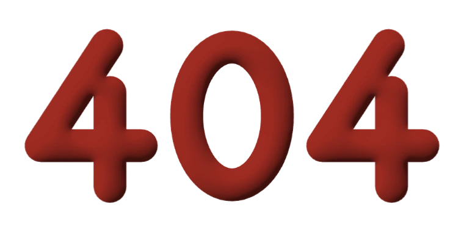

This page has fallen off the tree.
The link may be old, or the address mistyped. The numbers are soft, by the way: give them a poke.

The link may be old, or the address mistyped. The numbers are soft, by the way: give them a poke.